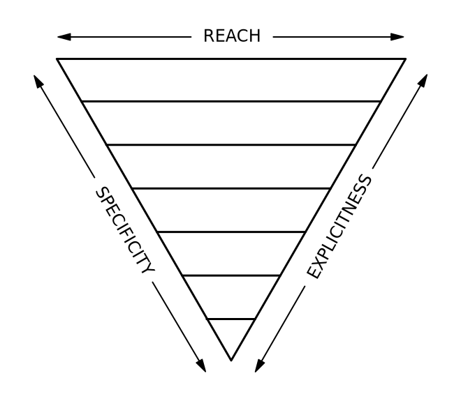
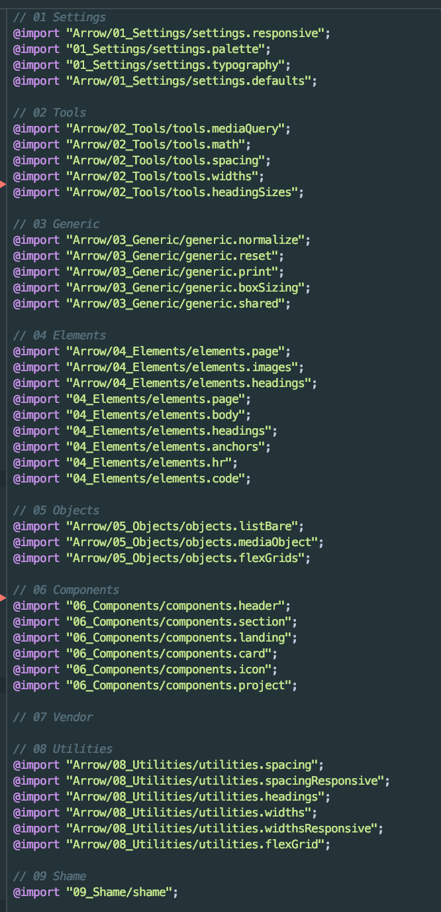

If you've ever written CSS, you know it how frustrating it can be to work with, whether it's the cascade, inheritance, or specificity. While other languages have good coding practices to follow, CSS seems to be the wild west of writing code. Most projects have that one CSS file that gets longer with every new feature. Either new styles are tacked on at the end, or styles are copy-pasted from another element onto a new one. This becomes a huge problem when your application begins to grow. The stylesheet's become a mass of overrides and !importants, and making changes means testing to see what else changed.
It was only just recently that we've considered adding some organization to our styles. I've followed the different architectures such as SMACSS (Scalable and Modular Architecture for CSS), OOCSS (Object-Oriented CSS), Atomic CSS, and ITCSS (Inverted Triangle CSS) as they've grown, all of which can be used to organize CSS or any preprocessor you use. While some might prefer others, ITCSS has become the front-runner throughout the community for the same reasons I enjoy it. It gives just enough structure to keep your styles inline while leaving you plenty of wiggle-room to adapt it to any styles you have.
The ITCSS Triangle
ITCSS, or Inverted Triangle CSS is based on just that - an inverted triangle. The triangle is made of up layers with separate rules for each, which creates a specific source order for your styles. At the top, you have your global styles such as variables (if using a preprocessor) and base element styles, then in the middle are your reusable objects and components, followed by specific utility and helper classes at the bottom. The benefit of the triangle is that you have a base set of styles at the top, but can intentionally override them as you add more specific and unique components to your project. This allows you to add new styles throughout the triangle without repercussions.
While everyone (hopefully) uses their own naming structure, BEM, or Block, Element, Modifier has become the new standard for naming selectors. Although the name tries to explain itself, the gist is that every basic class name is a block, children of blocks can be elements, and any modified block or element can have a modifier. What's unique is that for element or modifier classes, the block or element it's associated with is included in the class name. For example, classes on an active nav item would be .nav__item .nav__item--active, where c-nav is the block, item is the element, and active is a modifier of item. BEM not only gives us consistency between developers but adds clarity and legibility to code.
I had spent a long time researching architectures, curating good coding practices (such as selector intent) and trying out changes when I began researching design systems. I wanted to create a system that could be applied to any project regardless of the branding, customer, tech stack or process.
Design one unifying system that promotes consistency, organization and efficient code company-wide while keeping branding and design choices separate for each product.
I began by applying custom ITCSS to an existing SCSS project and identifying reusable styles and structures. The creator of ITCSS, Harry Roberts, published some sample files which I was able to adapt for widespread use. I created reusable components like buttons and dropdowns, autogenerated headings with vertical rhythm, and a Flexbox grid system including gutters, but I was struggling to switch brandings or components for different products.
Branding styles and product-specific components were woven throughout the stylesheets and difficult to extract. I considered adding themes, but that would require a lot of overrides and doesn't take unique components into account. To deal with multiple products I realized I needed multiple collections of styles. Instead of creating one framework to apply all the styles, I created a framework of product-agnostic styles, objects and default values, which is now the Arrow framework. I then packaged Arrow so it could be used as a dependency for multiple products.
But I haven't forgotten about our product-specific styles; these include brand colors, typography, and product-specific components. Arrow uses variables to set default values, so changing colors or fonts for products only requires changing a variable. Although the product styles need to be created separately for each product, components of each product will still follow the standards set by Arrow styles, creating consistency both within and across products. Once the product styles have been established, just import the Arrow and product-specific stylesheets according to the ITCSS architecture, and developers will have everything they need to create maintainable, scalable, consistent styles.
The import file combining Arrow and product-specific stylesheets of this site.